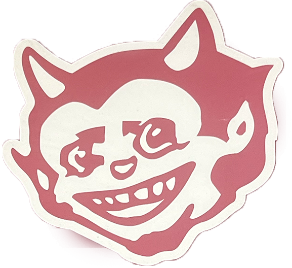
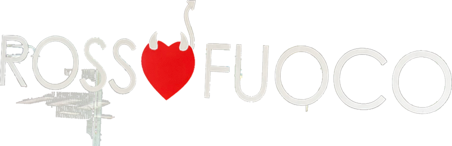
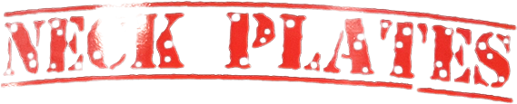
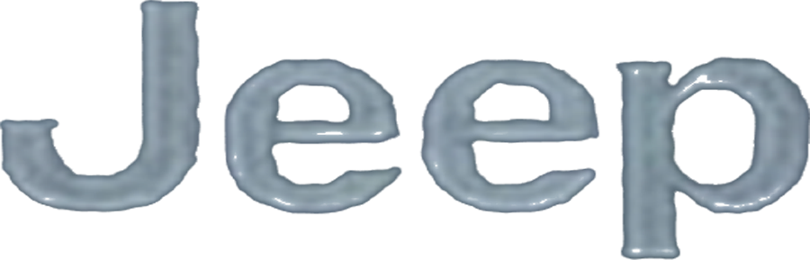
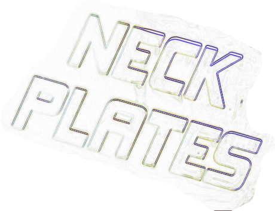
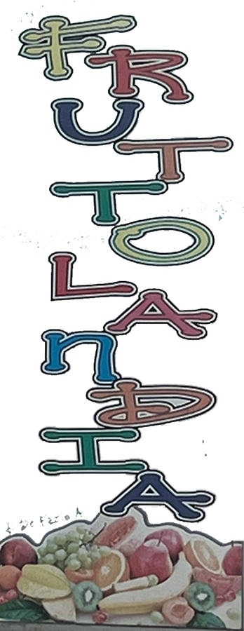
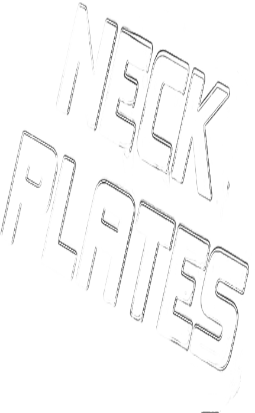

10:00

ANNUAL CALENDARModule: Zine & Zeichnen
LONGINES WATCHModule: Labs2
CONSPIRACY NEWSPAPERModule: Layout
BETWEEN FRACTIONS OF OUR LIFESWeek with Binta Kopp: Collaborative Zine
POST DIGITAL 3D RENDERModule: 3D Design
(✿ ♡‿♡)
𝓂𝓎 𝒻𝒾𝓇𝓈𝓉 𝓎𝑒𝒶𝓇 𝒶𝓉 𝒽𝓀𝒷
𝓈𝓉𝓊𝒹𝓎𝒾𝓃𝑔 𝓋𝒾𝓈𝓀𝑜𝓂
(♡‿♡ ✿)
fabios virtual desktop


01_semester
02_semester
process_pics
hkb_everything
File01_labsweek2_object
ModuleLabs Week 2, 2nd semester
Starting objecta longines watch
Techniqueschemigram, lithoprint
Presentationprints hanging on clothesline in the room



stack itspread it outshuffle
File03_zine_drawing_calendar
Formatcalendar zine, 14 pages, 1st edition
Materialmarker, crayon, digitally coloured
stack itspread it outshuffle

File05_3d_module_post-digital
SoftwareBlender, Polycam, Krea
Materialphotoscans, blenderkit, AI asset, meshes, etc.

(✿ ♡‿♡)
𝓂𝓎 𝒻𝒾𝓇𝓈𝓉 𝓎𝑒𝒶𝓇 𝒶𝓉 𝒽𝓀𝒷
𝓈𝓉𝓊𝒹𝓎𝒾𝓃𝑔 𝓋𝒾𝓈𝓀𝑜𝓂
(♡‿♡ ✿)
loading 0%
enter >>